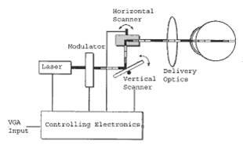
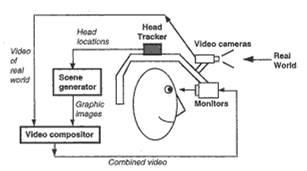
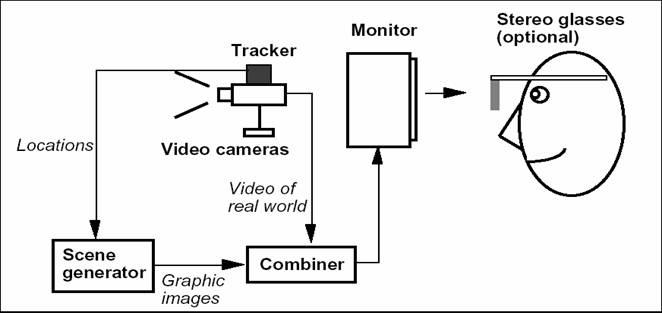

|
|
SJB Institute of Technology |
 |
Dept. of Computer Science & Engineering
A Technical Seminar On
An Introduction to Augmented Reality and Its Applications
BYManohara. K (1JB10CS054) |
Under The Guidance OfMrs. Chaitra.M Asst. professor |
AGENDA
- Introduction
- Components of AR
- AR Devices
- Applications
- Conclusions and Future Work
- References
Introduction
- Augmented Reality (AR) is a new technology that involves the overlay of computer graph-ics on the real world
- AR is within a more general context termed Mixed Reality (MR)
When designing an AR system, three aspects must be in mind:
- (1) Combination of real and virtual worlds;
- (2) Interactivity in real time;
- (3) Registration in 3D.
Along with these 3 aspects portability can also be added.
Figure 1: Virtual/Real occlusions.The brown cow and tree are virtual(the rest is real)
Components of AR
- The scene generator is the device or software responsible for rendering the scene.
Scene Generator
- Tracking System moniters the environment
- The objects in the real and virtual worlds must be properly aligned with respect to each other
Tracking System
- Most of the Displays devices for AR are HMD (Head Mounted Display)
Display
AR Devices
Four major classes of AR can be distinguished by their display type:
- Optical See-through
- Virtual Retinal Systems
- Video See-Through
- Monitor Based AR and Projector Based AR.
| 
Figure 2: Virtual Retinal System Scheme. |

Figure 3: Video See-Through Scheme. |

Figure 4: Virtual Retinal System Scheme. |
Applications
- CT (Computed Tomography) or MRI (Magnetic Resonance Imaging) scans
- ultrasound imaging
Medical
- AR is used in film industry and NEWS Business
- AR is also applied is on game development
Entertainment
- The military has been using displays in cock-pits that present information to the pilot
- AR is also used in Military Training
Military Operations
Application continue...
- Engineering Design
- Robotics and Telerobotics
- Manufacturing, Maintenance and Repair
Collaborative AR
AR addresses two major issues with collab- oration: seamless integration with existing tools and practices, and enhancing practice by supporting remote and co-located activi- ties that would otherwise be impossible.
Visualization Issues
- Visualization Errors
- Removing real objects from the environment
- Photorealistic Rendering
Conclusions
Despite of the many recent advances in AR, much work remains to be done
Here are some areas requiring further research
- Ubiquitous tracking and system portability
- Ease of setup and use
- Photorealistic and advanced rendering:
- AR in all senses
Future papers
- Paper-Based Augmented Reality
Jonathan J. Hull, Berna Erol, Jamey Graham, Qifa Ke, Hidenobu Kishi, Jorge Moraleda, Daniel G. Van Olst - Haptic System for Eyes Free and Hands Free Pedestrian Navigation
Nehla Ghouaiel , Jean-Marc Cieutat
REFERENCES
- K. Ahlers and A. Kramer. Distributed augmented reality for collaborative de- sign applications. European Computer Industry Research Center, 3-14, 1995.
- R. Azuma. A survey of augmented reality. ACM SIGGRAPH, 1-38, 1997.
- R. Azuma et al. Recent advances in augmented reality. IEEE Computer Graphics and Applications, 20-38, 2001.
- E. Urban. The information warrior. IEEE Spectrum, 32 (11): 66-70, 1995.